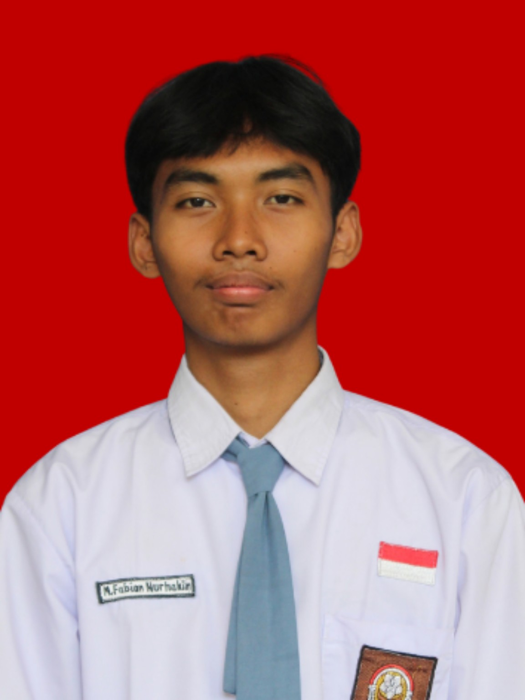

Organisasi Siswa Intra Sekolah (OSIS)
Memiliki pengalaman dalam kegiatan organisasi OSIS, termasuk belajar bekerja sama, berkomunikasi, dan menjalankan tanggung jawab dalam kegiatan sekolah.

CURRICULUM VITAE
Pelajar yang memiliki minat pada otomotif, olahraga, dan kegiatan luar ruang.
Saya adalah pelajar berusia 17 tahun yang tertarik pada bidang otomotif dan kegiatan olahraga. Saya senang mencoba pengalaman baru, bekerja sama dengan orang lain, serta mengembangkan kemampuan diri melalui kegiatan sekolah dan aktivitas di luar kelas.
Memiliki pengalaman dalam kegiatan organisasi OSIS, termasuk belajar bekerja sama, berkomunikasi, dan menjalankan tanggung jawab dalam kegiatan sekolah.
Mengikuti kegiatan ekstrakurikuler badminton untuk melatih kebugaran, kedisiplinan, konsentrasi, dan sportivitas.
Terus belajar dan mengembangkan keterampilan, khususnya dalam bidang otomotif, serta meningkatkan kedisiplinan dan kemampuan bekerja sama.